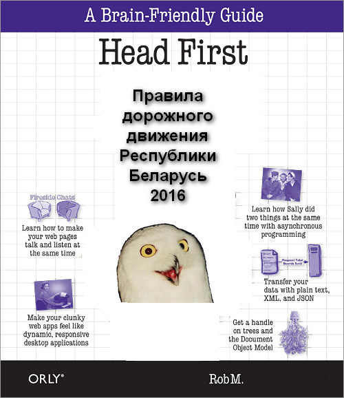
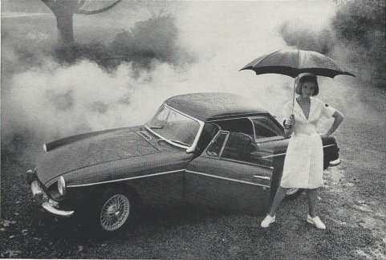
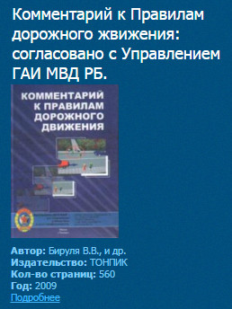

Конечно же, для курсантов автошкол - будущих водителей.
Идея сайта пришла после прочтения ряда книг издательства O'Reily, пожалуй, лучшего издателя технической
литературы для программистов. Когда читаешь их серию Head First, запоминается само собой.
В самоучителе правила будут написаны понятно и увлекательно, с фотографиями дорожных ситуаций.

Дружеский шарж на книги серии HeadFirst издательства O'Reily.
Казалось бы, купил себе себе книжку "Правила дорожного движения Республики Беларусь 2016" и выучил.
Особенно, студенты скажут: что за несчастных 100 страниц, у нас иная методичка потолще. Какая ночь перед
экзаменом? - тут и пары часов хватит.
Однако, это не тот случай, когда экзамен можно сдать ни разу не появившись на лекции, наплетя престарелому доценту про бороздящие корабли.
Кадр из очень известного фильма.
Большинство правил надо не просто знать, они должны сидеть в подкорке мозга, потому что в автомобиле надо следить за ситуацией на дороге, мгновенно реагируя, а не думать: "а что это за знак такой?".
Эти правила вас заставит выучить сама жизнь.
Однако еще нам надо сдать теоретический зкзамен в ГАИ, ответив на каверзные вопросы вроде:

Медсестра. Фото с сайта etsy.com
Для толкования правил в 2009 году напечатали Комментарий к Правилам дорожного движения: 560 страниц (в 5 раз больше чем сами Правила).

Комментарий к правилам движения. Скриншот с сайта akademkniga.by
Поэтому на нашем сайте каждый пункт ПДД будет расписан на понятном, а не сухом юридическом языке и проиллюстрирован фотографиями: лучше один раз увидеть, чем 5 раз прочитать.
Вместо 5 строчек юридической тарабарщины теста правил будет страничка доступного текста с фото: пока прочитаете само запомнится.
Пока вы читаете хоть немного интересный текст, в мозгу выстраиваются взаимосвязи; вы думаете, представляете, и в результате эмоционально-положительного восприятия запоминаете.